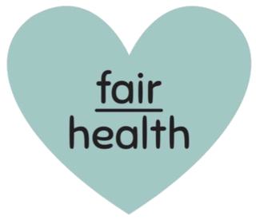

Norma Regulamentadora nº 1 · NR-01
1.5.3.1.4
O gerenciamento de riscos ocupacionais deve abranger os riscos que decorrem dos agentes físicos, químicos e biológicos, riscos de acidentes e riscos relacionados aos fatores ergonômicos, incluindo os fatores de risco psicossociais relacionados ao trabalho.
Redação dada pela Portaria MTE nº 1.419/2024
Guia
NR-01

fairhealth